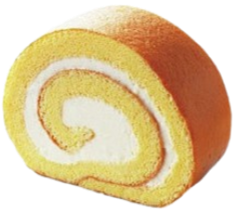

Take a square, flat container, fill it completely with liquid,
and seal it so that there is no free surface inside the container (this is very important — it is what makes the Rayleigh model “simple”).
Then heat the container slowly and uniformly from below, so that the temperature at the bottom $T_2$, gradually becomes higher than the temperature at the top $T_1$.
When the temperature difference reaches a certain threshold value, a convection pattern suddenly appears. In a rectangular container, this takes the form of cake roll that are aligned parallel to the short side
Stimulated by these experiments, Rayleigh in 1916 derived the theoretical requirement for the development of convective motion in a layer of fluid with two free surfaces. He showed that the instability would occur when the adverse temperature gradient was large enough to make the ratio
$$
Ra = g \alpha \Gamma d^{4} / \kappa \nu
$$
exceed a certain critical value.
$g$ is the acceleration due to gravity, $\alpha$ is the fluid's coefficient of thermal expansion, $\Gamma = -d\overline{T}/dz$ is the vertical temperature gradient of the background state, $d$ is the depth of the layer, $\kappa$ is the fluid's thermal diffusivity, and $\nu$ is the fluid's kinematic viscosity.
The parameter $Ra$ is called the Rayleigh number, and it represents a ratio of the destabilizing effect of buoyancy to the stabilizing effect of viscosity.
Since Bénard's original experiments,
it has been recognized that most of the
motions he observed were instabilities driven by the variation of surface tension with
temperature and not the thermal instability due to a top-heavy density gradient

Why does convection not grow gradually, but rather appear suddenly, seemingly switching from no motion to organized flow?
How do the water molecules across the entire layer coordinate their motion to create a regular pattern of alternating upwelling and downwelling regions? We are accustomed to thinking of heat as a source of disorder, yet here heating gives rise to ordered motion.
◀
▶